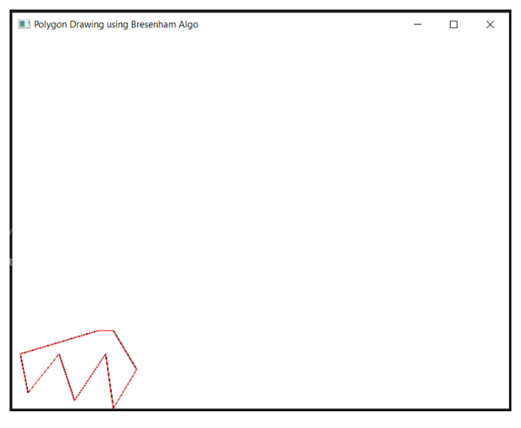
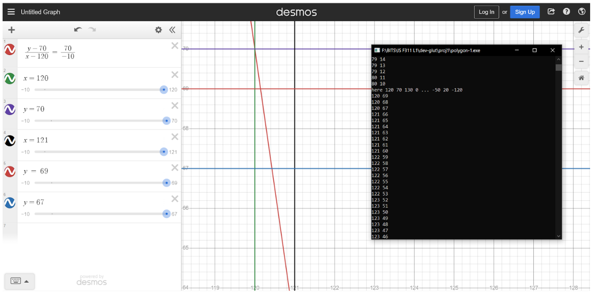

Line drawing and Polygon Drawing Algorithm
Description
For drawing a line with any slope, we subdivided our drawing routine into four cases:
- m > 0 and dy < dx
- m > 0 and dy > dx
- m < 0 and dy < dx
- m < 0 and dy > dx
(dy = y1 - y0, dx = x1 - x0)
We used Bresenham’s Line Algorithm in each of these subcategories.
Further, we made sure the line is always being drawn towards the positive x-direction only so that there’s only one way in which a given line can be drawn. If this wasn’t implemented, then a line can be drawn from either P0 to P1, or P1 to P0; in such a scenario, there can be differences in pixels when the line passes through the midpoint. Hence having only one direction of drawing a line, removes this inconsistency in line drawing.
To convince ourselves that this was the best way to draw a line between any given two points, we compared our line with the default line drawing routine of OpenGL using glBegin(GL_LINES) method.
Unfortunately, we found out that the two algorithms don’t match everywhere. In the picture shown, the black lines of the polygon were drawn using our implementation of Bresenham, while the red lines of the polygon were drawn using the default routine of OpenGL. The red lines should completely supersede the black lines and the black lines shouldn’t be visible, but as you can see from the picture that this is not the case here. The points where the black lines are visible are the points where our algorithm and OpenGL’s algorithm differ.

After a few hours of scrutiny, we decided we would see for ourselves if our Bresenham’s algorithm is working correctly or not. We opened up Desmos and manually checked against the points being drawn if they were correct or not. And all of them turned out to be indeed correct. This was peculiar now. Searching on the web didn’t give us any concise answer to this issue, and we just concluded that OpenGL doesn’t use Bresenham to plot lines.

Implementation
void drawDot( GLint x, GLint y)
{
glBegin( GL_POINTS );
glVertex2i( x, y );
glEnd();
}
void swap(int &a, int &b) { // Just swaps variables.
a = a^b;
b = a^b;
a = a^b;
}
void lineplot(int x0, int y0, int x1, int y1)
{
int dy = y1 - y0; // = a
int dx = x1 - x0; // = -b
// This is so that the line is always drawn towards positive x direction. This helps remove the minor issue of the line from P1 to P0 and the line from P0 to P1 not being rendered exactly the same.
if(dx < 0) {
swap(x0, x1);
swap(y0, y1);
dy = y1 - y0;
dx = x1 - x0;
}
/*
Dividing render routine into 4 subcategories:
1) when m > 0 and dy < dx
2) when m > 0 and dy > dx
3) when m < 0 and dy < dx
4) when m < 0 and dy > dx
*/
if(dy >= 0 && abs(dy) <= dx) {
int d = 2*dy - dx;
int incrE = 2*dy;
int incrNE = 2*(dy - dx);
int x = x0, y = y0;
drawDot(x,y);
while (x < x1){
if (d <= 0){ // choose E
d += incrE;
}
else{ // choose NE
d += incrNE;
y++;
}
x++;
drawDot(x,y);
}
} else if(dy >= 0 && abs(dy) > dx) {
int d = dy - 2*dx;
int incrN = -2*dx;
int incrNE = 2*(dy - dx);
int x = x0, y = y0;
drawDot(x, y);
while(y < y1) {
if(d <= 0) { // choose NE
d += incrNE;
x++;
} else { // choose N
d += incrN;
}
y++;
drawDot(x, y);
}
} else if(dy < 0 && abs(dy) <= dx) {
int d = 2*dy + dx;
int incrE = 2*dy;
int incrSE = 2*(dy + dx);
int x = x0, y = y0;
drawDot(x,y);
while (x < x1){
if (d <= 0){ // choose SE
d += incrSE;
y--;
}
else{ // choose E
d += incrE;
}
x++;
drawDot(x,y);
}
} else if(dy < 0 && abs(dy) > dx) {
int d = dy + 2*dx;
int incrS = 2*dx;
int incrSE = 2*(dy + dx);
int x = x0, y = y0;
drawDot(x, y);
while(y > y1) {
if(d <= 0) { // choose S
d += incrS;
} else { // choose SE
d += incrSE;
x++;
}
y--;
drawDot(x, y);
}
}
}
Note: Additionally, a simple loop was later created to allow for drawing polygons using the lineplot routine as the base.